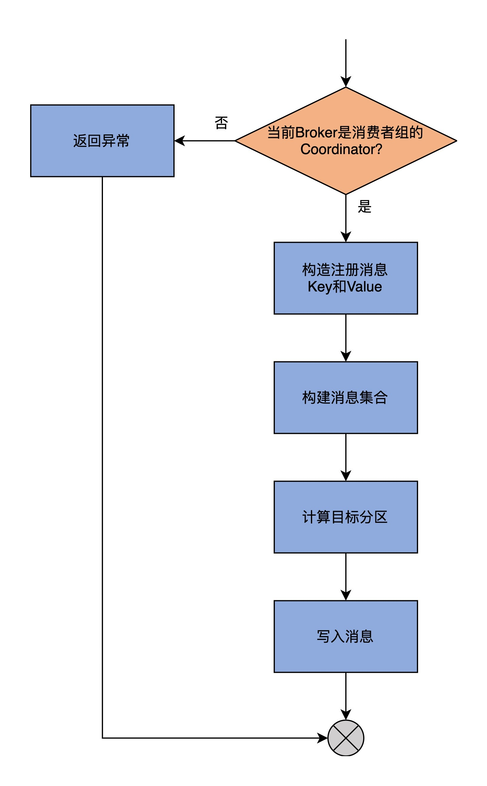
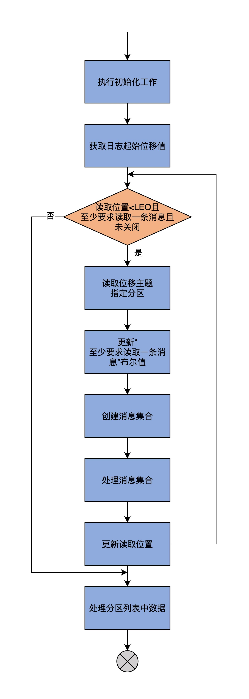
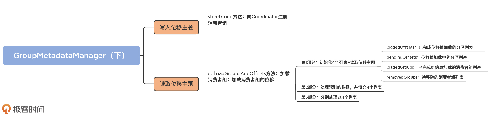

- 00 导读 构建Kafka工程和源码阅读环境、Scala语言热身.md.html
- 00 开篇词 阅读源码，逐渐成了职业进阶道路上的“必选项”.md.html
- 00 重磅加餐 带你快速入门Scala语言.md.html
- 01 日志段：保存消息文件的对象是怎么实现的？.md.html
- 02 日志（上）：日志究竟是如何加载日志段的？.md.html
- 03 日志（下）：彻底搞懂Log对象的常见操作.md.html
- 04 索引（上）：改进的二分查找算法在Kafka索引的应用.md.html
- 05 索引（下）：位移索引和时间戳索引的区别是什么？.md.html
- 06 请求通道：如何实现Kafka请求队列？.md.html
- 07 SocketServer（上）：Kafka到底是怎么应用NIO实现网络通信的？.md.html
- 08 SocketServer（中）：请求还要区分优先级？.md.html
- 09 SocketServer（下）：请求处理全流程源码分析.md.html
- 10 KafkaApis：Kafka最重要的源码入口，没有之一.md.html
- 11 Controller元数据：Controller都保存有哪些东西？有几种状态？.md.html
- 12 ControllerChannelManager：Controller如何管理请求发送？.md.html
- 13 ControllerEventManager：变身单线程后的Controller如何处理事件？.md.html
- 14 Controller选举是怎么实现的？.md.html
- 15 如何理解Controller在Kafka集群中的作用？.md.html
- 16 TopicDeletionManager： Topic是怎么被删除的？.md.html
- 17 ReplicaStateMachine：揭秘副本状态机实现原理.md.html
- 18 PartitionStateMachine：分区状态转换如何实现？.md.html
- 19 TimingWheel：探究Kafka定时器背后的高效时间轮算法.md.html
- 20 DelayedOperation：Broker是怎么延时处理请求的？.md.html
- 21 AbstractFetcherThread：拉取消息分几步？.md.html
- 22 ReplicaFetcherThread：Follower如何拉取Leader消息？.md.html
- 23 ReplicaManager（上）：必须要掌握的副本管理类定义和核心字段.md.html
- 24 ReplicaManager（中）：副本管理器是如何读写副本的？.md.html
- 25 ReplicaManager（下）：副本管理器是如何管理副本的？.md.html
- 26 MetadataCache：Broker是怎么异步更新元数据缓存的？.md.html
- 27 消费者组元数据（上）：消费者组都有哪些元数据？.md.html
- 28 消费者组元数据（下）：Kafka如何管理这些元数据？.md.html
- 29 GroupMetadataManager：组元数据管理器是个什么东西？.md.html
- 30 GroupMetadataManager：位移主题保存的只是位移吗？.md.html
- 31 GroupMetadataManager：查询位移时，不用读取位移主题？.md.html
- 32 GroupCoordinator：在Rebalance中，Coordinator如何处理成员入组？.md.html
- 33 GroupCoordinator：在Rebalance中，如何进行组同步？.md.html
- 特别放送（一）经典的Kafka学习资料有哪些？.md.html
- 特别放送（三）我是怎么度过日常一天的？.md.html
- 特别放送（二）一篇文章带你了解参与开源社区的全部流程.md.html
- 特别放送（五） Kafka 社区的重磅功能：移除 ZooKeeper 依赖.md.html
- 特别放送（四）20道经典的Kafka面试题详解.md.html
- 结束语 源码学习，我们才刚上路呢.md.html
- 捐赠
31 GroupMetadataManager：查询位移时，不用读取位移主题？
你好，我是胡夕。
上节课，我们学习了位移主题中的两类消息：消费者组注册消息和消费者组已提交位移消息。今天，我们接着学习位移主题，重点是掌握写入位移主题和读取位移主题。
我们总说，位移主题是个神秘的主题，除了它并非我们亲自创建之外，它的神秘之处还体现在，它的读写也不由我们控制。默认情况下，我们没法向这个主题写入消息，而且直接读取该主题的消息时，看到的更是一堆乱码。因此，今天我们学习一下读写位移主题，这正是去除它神秘感的重要一步。
写入位移主题
我们先来学习一下位移主题的写入。在[第29讲]学习storeOffsets方法时，我们已经学过了appendForGroup方法。Kafka定义的两类消息类型都是由它写入的。在源码中，storeGroup方法调用它写入消费者组注册消息，storeOffsets方法调用它写入已提交位移消息。
首先，我们需要知道storeGroup方法，它的作用是向Coordinator注册消费者组。我们看下它的代码实现：
def storeGroup(group: GroupMetadata,
groupAssignment: Map[String, Array[Byte]],
responseCallback: Errors => Unit): Unit = {
// 判断当前Broker是否是该消费者组的Coordinator
getMagic(partitionFor(group.groupId)) match {
// 如果当前Broker不是Coordinator
case Some(magicValue) =>
val timestampType = TimestampType.CREATE_TIME
val timestamp = time.milliseconds()
// 构建注册消息的Key
val key = GroupMetadataManager.groupMetadataKey(group.groupId)
// 构建注册消息的Value
val value = GroupMetadataManager.groupMetadataValue(group, groupAssignment, interBrokerProtocolVersion)
// 使用Key和Value构建待写入消息集合
val records = {
val buffer = ByteBuffer.allocate(AbstractRecords.estimateSizeInBytes(magicValue, compressionType,
Seq(new SimpleRecord(timestamp, key, value)).asJava))
val builder = MemoryRecords.builder(buffer, magicValue, compressionType, timestampType, 0L)
builder.append(timestamp, key, value)
builder.build()
}
// 计算要写入的目标分区
val groupMetadataPartition = new TopicPartition(Topic.GROUP_METADATA_TOPIC_NAME, partitionFor(group.groupId))
val groupMetadataRecords = Map(groupMetadataPartition -> records)
val generationId = group.generationId
// putCacheCallback方法，填充Cache
......
// 向位移主题写入消息
appendForGroup(group, groupMetadataRecords, putCacheCallback)
// 如果当前Broker不是Coordinator
case None =>
// 返回NOT_COORDINATOR异常
responseCallback(Errors.NOT_COORDINATOR)
None
}
}
为了方便你理解，我画一张图来展示一下storeGroup方法的逻辑。

storeGroup方法的第1步是调用getMagic方法，来判断当前Broker是否是该消费者组的Coordinator组件。判断的依据，是尝试去获取位移主题目标分区的底层日志对象。如果能够获取到，就说明当前Broker是Coordinator，程序进入到下一步；反之，则表明当前Broker不是Coordinator，就构造一个NOT_COORDINATOR异常返回。
第2步，调用我们上节课学习的groupMetadataKey和groupMetadataValue方法，去构造注册消息的Key和Value字段。
第3步，使用Key和Value构建待写入消息集合。这里的消息集合类是MemoryRecords。
当前，建模Kafka消息集合的类有两个。
- MemoryRecords：表示内存中的消息集合；
- FileRecords：表示磁盘文件中的消息集合。
这两个类的源码不是我们学习的重点，你只需要知道它们的含义就行了。不过，我推荐你课下阅读一下它们的源码，它们在clients工程中，这可以进一步帮助你理解Kafka如何在内存和磁盘上保存消息。
第4步，调用partitionFor方法，计算要写入的位移主题目标分区。
第5步，调用appendForGroup方法，将待写入消息插入到位移主题的目标分区下。至此，方法返回。
需要提一下的是，在上面的代码中，我省略了putCacheCallback方法的源码，我们在第29讲已经详细地学习过它了。它的作用就是当消息被写入到位移主题后，填充Cache。
可以看到，写入位移主题和写入其它的普通主题并无差别。Coordinator会构造符合规定格式的消息数据，并把它们传给storeOffsets和storeGroup方法，由它们执行写入操作。因此，我们可以认为，Coordinator相当于位移主题的消息生产者。
读取位移主题
其实，除了生产者这个角色以外，Coordinator还扮演了消费者的角色，也就是读取位移主题。跟写入相比，读取操作的逻辑更加复杂一些，不光体现在代码长度上，更体现在消息读取之后的处理上。
首先，我们要知道，什么时候需要读取位移主题。
你可能会觉得，当消费者组查询位移时，会读取该主题下的数据。其实不然。查询位移时，Coordinator只会从GroupMetadata元数据缓存中查找对应的位移值，而不会读取位移主题。真正需要读取位移主题的时机，是在当前Broker当选Coordinator，也就是Broker成为了位移主题某分区的Leader副本时。
一旦当前Broker当选为位移主题某分区的Leader副本，它就需要将它内存中的元数据缓存填充起来，因此需要读取位移主题。在代码中，这是由scheduleLoadGroupAndOffsets方法完成的。该方法会创建一个异步任务，来读取位移主题消息，并填充缓存。这个异步任务要执行的逻辑，就是loadGroupsAndOffsets方法。
如果你翻开loadGroupsAndOffsets方法的源码，就可以看到，它本质上是调用doLoadGroupsAndOffsets方法实现的位移主题读取。下面，我们就重点学习下这个方法。
这个方法的代码很长，为了让你能够更加清晰地理解它，我先带你了解下它的方法签名，然后再给你介绍具体的实现逻辑。
首先，我们来看它的方法签名以及内置的一个子方法logEndOffset。
private def doLoadGroupsAndOffsets(topicPartition: TopicPartition, onGroupLoaded: GroupMetadata => Unit): Unit = {
// 获取位移主题指定分区的LEO值
// 如果当前Broker不是该分区的Leader副本，则返回-1
def logEndOffset: Long = replicaManager.getLogEndOffset(topicPartition).getOrElse(-1L)
......
}
doLoadGroupsAndOffsets方法，顾名思义，它要做两件事请：加载消费者组；加载消费者组的位移。再强调一遍，所谓的加载，就是指读取位移主题下的消息，并将这些信息填充到缓存中。
该方法接收两个参数，第一个参数topicPartition是位移主题目标分区；第二个参数onGroupLoaded是加载完成后要执行的逻辑，这个逻辑是在上层组件中指定的，我们不需要掌握它的实现，这不会影响我们学习位移主题的读取。
doLoadGroupsAndOffsets还定义了一个内置子方法logEndOffset。它的目的很简单，就是获取位移主题指定分区的LEO值，如果当前Broker不是该分区的Leader副本，就返回-1。
这是一个特别重要的事实，因为Kafka依靠它来判断分区的Leader副本是否发生变更。一旦发生变更，那么，在当前Broker执行logEndOffset方法的返回值，就是-1，此时，Broker就不再是Leader副本了。
doLoadGroupsAndOffsets方法会读取位移主题目标分区的日志对象，并执行核心的逻辑动作，代码如下：
......
replicaManager.getLog(topicPartition) match {
// 如果无法获取到日志对象
case None =>
warn(s"Attempted to load offsets and group metadata from $topicPartition, but found no log")
case Some(log) =>
// 核心逻辑......
我把核心的逻辑分成3个部分来介绍。
- 第1部分：初始化4个列表+读取位移主题；
- 第2部分：处理读到的数据，并填充4个列表；
- 第3部分：分别处理这4个列表。
在具体讲解这个方法所做的事情之前，我先画一张流程图，从宏观层面展示一下这个流程。

第1部分
首先，我们来学习一下第一部分的代码，完成了对位移主题的读取操作。
// 已完成位移值加载的分区列表
val loadedOffsets = mutable.Map[GroupTopicPartition, CommitRecordMetadataAndOffset]()
// 处于位移加载中的分区列表，只用于Kafka事务
val pendingOffsets = mutable.Map[Long, mutable.Map[GroupTopicPartition, CommitRecordMetadataAndOffset]]()
// 已完成组信息加载的消费者组列表
val loadedGroups = mutable.Map[String, GroupMetadata]()
// 待移除的消费者组列表
val removedGroups = mutable.Set[String]()
// 保存消息集合的ByteBuffer缓冲区
var buffer = ByteBuffer.allocate(0)
// 位移主题目标分区日志起始位移值
var currOffset = log.logStartOffset
// 至少要求读取一条消息
var readAtLeastOneRecord = true
// 当前读取位移<LEO，且至少要求读取一条消息，且GroupMetadataManager未关闭
while (currOffset < logEndOffset && readAtLeastOneRecord && !shuttingDown.get()) {
// 读取位移主题指定分区
val fetchDataInfo = log.read(currOffset,
maxLength = config.loadBufferSize,
isolation = FetchLogEnd,
minOneMessage = true)
// 如果无消息可读，则不再要求至少读取一条消息
readAtLeastOneRecord = fetchDataInfo.records.sizeInBytes > 0
// 创建消息集合
val memRecords = fetchDataInfo.records match {
case records: MemoryRecords => records
case fileRecords: FileRecords =>
val sizeInBytes = fileRecords.sizeInBytes
val bytesNeeded = Math.max(config.loadBufferSize, sizeInBytes)
if (buffer.capacity < bytesNeeded) {
if (config.loadBufferSize < bytesNeeded)
warn(s"Loaded offsets and group metadata from $topicPartition with buffer larger ($bytesNeeded bytes) than " +
s"configured offsets.load.buffer.size (${config.loadBufferSize} bytes)")
buffer = ByteBuffer.allocate(bytesNeeded)
} else {
buffer.clear()
}
fileRecords.readInto(buffer, 0)
MemoryRecords.readableRecords(buffer)
}
......
}
首先，这部分代码创建了4个列表。
- loadedOffsets：已完成位移值加载的分区列表；
- pendingOffsets：位移值加载中的分区列表；
- loadedGroups：已完成组信息加载的消费者组列表；
- removedGroups：待移除的消费者组列表。
之后，代码又创建了一个ByteBuffer缓冲区，用于保存消息集合。接下来，计算位移主题目标分区的日志起始位移值，这是要读取的起始位置。再之后，代码定义了一个布尔类型的变量，该变量表示本次至少要读取一条消息。
这些初始化工作都做完之后，代码进入到while循环中。循环的条件有3个，而且需要同时满足：
- 读取位移值小于日志LEO值；
- 布尔变量值是True；
- GroupMetadataManager未关闭。
只要满足这3个条件，代码就会一直执行while循环下的语句逻辑。整个while下的逻辑被分成了3个步骤，我们现在学习的第1部分代码，包含了前两步。最后一步在第3部分中实现，即处理上面的这4个列表。我们先看前两步。
第1步是读取位移主题目标分区的日志对象，从日志中取出真实的消息数据。读取日志这个操作，是使用我们在[第3讲]中学过的Log.read方法完成的。当读取到完整的日志之后，doLoadGroupsAndOffsets方法会查看返回的消息集合，如果一条消息都没有返回，则取消“至少要求读取一条消息”的限制，即把刚才的布尔变量值设置为False。
第2步是根据上一步获取到的消息数据，创建保存在内存中的消息集合对象，也就是MemoryRecords对象。
由于doLoadGroupsAndOffsets方法要将读取的消息填充到缓存中，因此，这里必须做出MemoryRecords类型的消息集合。这就是第二路case分支要将FileRecords转换成MemoryRecords类型的原因。
至此，第1部分逻辑完成。这一部分的产物就是成功地从位移主题目标分区读取到消息，然后转换成MemoryRecords对象，等待后续处理。
第2部分
现在，代码进入到第2部分：处理消息集合。
值得注意的是，这部分代码依然在while循环下，我们看下它是如何实现的：
// 遍历消息集合的每个消息批次(RecordBatch)
memRecords.batches.forEach { batch =>
val isTxnOffsetCommit = batch.isTransactional
// 如果是控制类消息批次
// 控制类消息批次属于Kafka事务范畴，这里不展开讲
if (batch.isControlBatch) {
......
} else {
// 保存消息批次第一条消息的位移值
var batchBaseOffset: Option[Long] = None
// 遍历消息批次下的所有消息
for (record <- batch.asScala) {
// 确保消息必须有Key，否则抛出异常
require(record.hasKey, "Group metadata/offset entry key should not be null")
// 记录消息批次第一条消息的位移值
if (batchBaseOffset.isEmpty)
batchBaseOffset = Some(record.offset)
// 读取消息Key
GroupMetadataManager.readMessageKey(record.key) match {
// 如果是OffsetKey，说明是提交位移消息
case offsetKey: OffsetKey =>
......
val groupTopicPartition = offsetKey.key
// 如果该消息没有Value
if (!record.hasValue) {
if (isTxnOffsetCommit)
pendingOffsets(batch.producerId)
.remove(groupTopicPartition)
else
// 将目标分区从已完成位移值加载的分区列表中移除
loadedOffsets.remove(groupTopicPartition)
} else {
val offsetAndMetadata = GroupMetadataManager.readOffsetMessageValue(record.value)
if (isTxnOffsetCommit)
pendingOffsets(batch.producerId).put(groupTopicPartition, CommitRecordMetadataAndOffset(batchBaseOffset, offsetAndMetadata))
else
// 将目标分区加入到已完成位移值加载的分区列表
loadedOffsets.put(groupTopicPartition, CommitRecordMetadataAndOffset(batchBaseOffset, offsetAndMetadata))
}
// 如果是GroupMetadataKey，说明是注册消息
case groupMetadataKey: GroupMetadataKey =>
val groupId = groupMetadataKey.key
val groupMetadata = GroupMetadataManager.readGroupMessageValue(groupId, record.value, time)
// 如果消息Value不为空
if (groupMetadata != null) {
// 把该消费者组从待移除消费者组列表中移除
removedGroups.remove(groupId)
// 将消费者组加入到已完成加载的消费组列表
loadedGroups.put(groupId, groupMetadata)
// 如果消息Value为空，说明是Tombstone消息
} else {
// 把该消费者组从已完成加载的组列表中移除
loadedGroups.remove(groupId)
// 将消费者组加入到待移除消费组列表
removedGroups.add(groupId)
}
// 如果是未知类型的Key，抛出异常
case unknownKey =>
throw new IllegalStateException(s"Unexpected message key $unknownKey while loading offsets and group metadata")
}
}
}
// 更新读取位置到消息批次最后一条消息的位移值+1，等待下次while循环
currOffset = batch.nextOffset
}
这一部分的主要目的，是处理上一步获取到的消息集合，然后把相应数据添加到刚刚说到的4个列表中，具体逻辑是代码遍历消息集合的每个消息批次（Record Batch）。我来解释一下这个流程。
首先，判断该批次是否是控制类消息批次，如果是，就执行Kafka事务专属的一些逻辑。由于我们不讨论Kafka事务，因此，这里我就不详细展开了。如果不是，就进入到下一步。
其次，遍历该消息批次下的所有消息，并依次执行下面的步骤。
第1步，记录消息批次中第一条消息的位移值。
第2步，读取消息Key，并判断Key的类型，判断的依据如下：
- 如果是提交位移消息，就判断消息有无Value。如果没有，那么，方法将目标分区从已完成位移值加载的分区列表中移除；如果有，则将目标分区加入到已完成位移值加载的分区列表中。
- 如果是注册消息，依然是判断消息有无Value。如果存在Value，就把该消费者组从待移除消费者组列表中移除，并加入到已完成加载的消费组列表；如果不存在Value，就说明，这是一条Tombstone消息，那么，代码把该消费者组从已完成加载的组列表中移除，并加入到待移除消费组列表。
- 如果是未知类型的Key，就直接抛出异常。
最后，更新读取位置，等待下次while循环，这个位置就是整个消息批次中最后一条消息的位移值+1。
至此，这部分代码宣告结束，它的主要产物就是被填充了的4个列表。那么，第3部分，就要开始处理这4个列表了。
第3部分
最后一部分的完整代码如下：
// 处理loadedOffsets
val (groupOffsets, emptyGroupOffsets) = loadedOffsets
.groupBy(_._1.group)
.map { case (k, v) =>
// 提取出<组名，主题名，分区号>与位移值对
k -> v.map { case (groupTopicPartition, offset) => (groupTopicPartition.topicPartition, offset) }
}.partition { case (group, _) => loadedGroups.contains(group) }
......
// 处理loadedGroups
loadedGroups.values.foreach { group =>
// 提取消费者组的已提交位移
val offsets = groupOffsets.getOrElse(group.groupId, Map.empty[TopicPartition, CommitRecordMetadataAndOffset])
val pendingOffsets = pendingGroupOffsets.getOrElse(group.groupId, Map.empty[Long, mutable.Map[TopicPartition, CommitRecordMetadataAndOffset]])
debug(s"Loaded group metadata $group with offsets $offsets and pending offsets $pendingOffsets")
// 为已完成加载的组执行加载组操作
loadGroup(group, offsets, pendingOffsets)
// 为已完成加载的组执行加载组操作之后的逻辑
onGroupLoaded(group)
}
(emptyGroupOffsets.keySet ++ pendingEmptyGroupOffsets.keySet).foreach { groupId =>
val group = new GroupMetadata(groupId, Empty, time)
val offsets = emptyGroupOffsets.getOrElse(groupId, Map.empty[TopicPartition, CommitRecordMetadataAndOffset])
val pendingOffsets = pendingEmptyGroupOffsets.getOrElse(groupId, Map.empty[Long, mutable.Map[TopicPartition, CommitRecordMetadataAndOffset]])
debug(s"Loaded group metadata $group with offsets $offsets and pending offsets $pendingOffsets")
// 为空的消费者组执行加载组操作
loadGroup(group, offsets, pendingOffsets)
// 为空的消费者执行加载组操作之后的逻辑
onGroupLoaded(group)
}
// 处理removedGroups
removedGroups.foreach { groupId =>
if (groupMetadataCache.contains(groupId) && !emptyGroupOffsets.contains(groupId))
throw new IllegalStateException(s"Unexpected unload of active group $groupId while " +
s"loading partition $topicPartition")
}
首先，代码对loadedOffsets进行分组，将那些已经完成组加载的消费者组位移值分到一组，保存在字段groupOffsets中；将那些有位移值，但没有对应组信息的分成另外一组，也就是字段emptyGroupOffsets保存的数据。
其次，代码为loadedGroups中的所有消费者组执行加载组操作，以及加载之后的操作onGroupLoaded。还记得吧，loadedGroups中保存的都是已完成组加载的消费者组。这里的onGroupLoaded是上层调用组件Coordinator传入的。它主要的作用是处理消费者组下所有成员的心跳超时设置，并指定下一次心跳的超时时间。
再次，代码为emptyGroupOffsets的所有消费者组，创建空的消费者组元数据，然后执行和上一步相同的组加载逻辑以及加载后的逻辑。
最后，代码检查removedGroups中的所有消费者组，确保它们不能出现在消费者组元数据缓存中，否则将抛出异常。
至此，doLoadGroupsAndOffsets方法的逻辑全部完成。经过调用该方法后，Coordinator成功地读取了位移主题目标分区下的数据，并把它们填充到了消费者组元数据缓存中。
总结
今天，我们重点学习了GroupMetadataManager类中读写位移主题的方法代码。Coordinator会使用这些方法对位移主题进行操作，实现对消费者组的管理。写入操作比较简单，它和一般的消息写入并无太大区别，而读取操作相对复杂一些。更重要的是，和我们的直观理解可能相悖的是，Kafka在查询消费者组已提交位移时，是不会读取位移主题的，而是直接从内存中的消费者组元数据缓存中查询。这一点你一定要重点关注。
我们来简单回顾一下这节课的重点。
- 读写方法：appendForGroup方法负责写入位移主题，doLoadGroupsAndOffsets负责读取位移主题，并加载组信息和位移值。
- 查询消费者组位移：查询位移时不读取位移主题，而是读取消费者组元数据缓存。

至此，GroupMetadataManager类的重要源码，我们就学完了。作为一个有着将近1000行代码，而且集这么多功能于一身的大文件，这个类的代码绝对值得你多读几遍。
除了我们集中介绍的这些功能之外，GroupMetadataManager类其实还是连接GroupMetadata和Coordinator的重要纽带，Coordinator利用GroupMetadataManager类实现操作GroupMetadata的目的。
我刚开始学习这部分源码的时候，居然不清楚GroupMetadata和GroupMetadataManager的区别是什么。现在，经过这3节课的内容，相信你已经知道，GroupMetadata建模的是元数据信息，而GroupMetadataManager类建模的是管理元数据的方法，也是管理内部位移主题的唯一组件。以后碰到任何有关位移主题的问题，你都可以直接到这个类中去寻找答案。
课后讨论
其实，除了读写位移主题之外，GroupMetadataManager还提供了清除位移主题数据的方法。代码中的cleanGroupMetadata就是做这个事儿的。请你结合源码，分析一下cleanGroupMetadata方法的流程。
欢迎在留言区写下你的思考和答案，跟我交流讨论，也欢迎你把今天的内容分享给你的朋友。
© 2019 - 2023 Liangliang Lee. Powered by gin and hexo-theme-book.